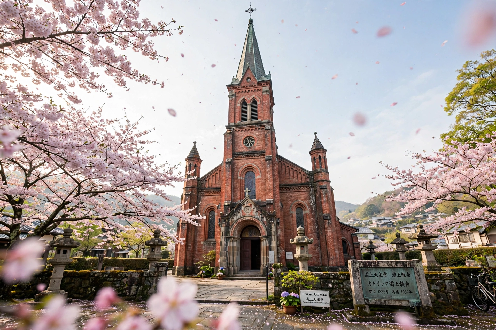

Catholic Church in JapanThe Catholic Church in Japan is part of the worldwide Catholic Church under the spiritual leadership of the Pope. Christianity was introduced by St Francis Xavier in 1549, grew rapidly, then endured more than two centuries of persecution under the Tokugawa shogunate before re-emerging in the Meiji era.
Xavier landed at Kagoshima in 1549; Jesuit, Franciscan and Dominican missions converted perhaps 300,000 Japanese, including daimyo such as Ōtomo Sōrin. Toyotomi Hideyoshi's 1587 edict and the martyrdom of the Twenty-six Martyrs of Japan (1597) began suppression, completed under Tokugawa Iemitsu with the sakoku closure. Hidden Christians (Kakure Kirishitan) preserved baptism and prayers in secret around Nagasaki.
After Japan reopened, Ōura Church in Nagasaki (1864) witnessed the "discovery of the Christians" in 1865, when hidden believers approached a French priest. Religious freedom came with Meiji reforms and the 1947 constitution. The Church suffered in the 1945 atomic bombing of Nagasaki, Japan's most Catholic city; Urakami Cathedral was destroyed.
Catholics form a small minority (under 0.5% of the population) but run influential schools, universities such as Sophia University in Tokyo, and hospitals. Pope John Paul II visited in 1981 and Pope Francis in 2019.